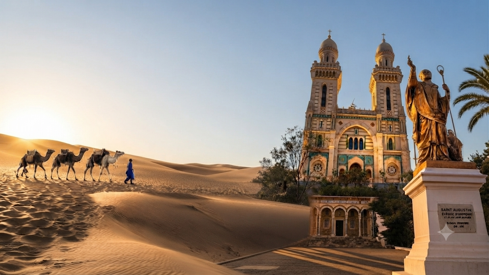

Langue
Destination
ALGÉRIE
Terre d'histoire, de culture et d'émotions
« Le monde est un livre, et ceux qui ne voyagent pas n'en lisent qu'une page. »

S.A.T.V. orchestre l'ensemble de votre séjour de A à Z. Profitez d'un service clé en main incluant accueil VIP, hébergement, transports, pension complète et guide accompagnateur dédié.
Par téléphone, WhatsApp ou via le formulaire du site.
Circuit, excursion ou séjour sur-mesure selon vos envies.
Tarifs clairs, conditions transparentes.
Accueil, transport, hébergement et guide inclus.
Notre équipe vous répond rapidement pour construire ensemble le voyage qui vous ressemble.